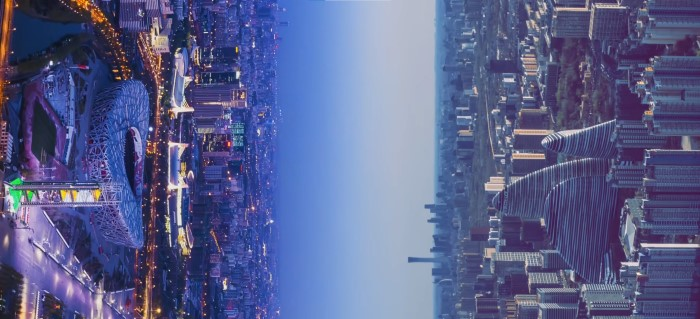

Overview of Beijing
People's Government of Beijing Municipality

Beijing is the capital of the People's Republic of China, the political and cultural centre of the country, a world-renowned ancient capital and a modern international city. Beijing is located at 39 degrees 56 minutes north latitude and 116 degrees 20 minutes east longitude, in the northern part of the Great Plain of North China, adjoining Tianjin to the east and Hebei Province to the rest.
Beijing has a warm temperate semi-humid semi-arid monsoon climate. The topography is high in the northwest and low in the southeast. It is surrounded by mountains in the west, north and northeast, and a plain that slopes gently towards the Bohai Sea in the southeast. The total number of tourist arrivals for the year is 180 million
——Beijing has a long and rich history that dates back over 3,000 years. Beijing has a long and rich history that dates back over 3,000 years. It has been the capital of China for more than 800 years, serving as the political, cultural, and educational center of the country. Throughout history, Beijing has been the site of many important events, such as the construction of the Great Wall of China, the establishment of the Ming and Qing dynasties, and the 2008 Summer Olympics.
——Beijing is home to many famous landmarks and attractions. Beijing is home to many famous landmarks and attractions, including the Forbidden City, the Temple of Heaven, the Summer Palace, and the Great Wall of China. These attractions offer a glimpse into China's rich cultural heritage and history. In addition, there are many modern attractions in Beijing, such as the Beijing Olympic Park, the National Stadium (also known as the Bird's Nest), and the CCTV Headquarters building.
——Beijing is renowned for its traditional arts. Beijing is renowned for its traditional arts, including calligraphy, painting, and martial arts. Visitors can experience these cultural traditions firsthand by visiting the many museums and cultural centers in the city, or by participating in classes and workshops. Beijing is also home to many theaters and performing arts venues, where visitors can enjoy traditional Chinese opera, acrobatics, and dance performances.
——Beijing is famous for cuisines. Beijing is famous for its culinary offerings, including Peking duck, dumplings, and hot pot. These dishes are known for their unique flavors and preparation methods, and are a must-try for any visitor to the city. Beijing also has a vibrant street food culture, with vendors selling a wide variety of snacks and dishes throughout the city.
——Beijing has a welcome climate Beijing has a temperate continental climate, with hot and humid summers and cold and dry winters. The best time to visit is in the spring or autumn, when the weather is mild and the skies are clear. However, visitors should be prepared for sudden changes in weather and bring appropriate clothing for the season.
 330445074@qq.com
330445074@qq.com